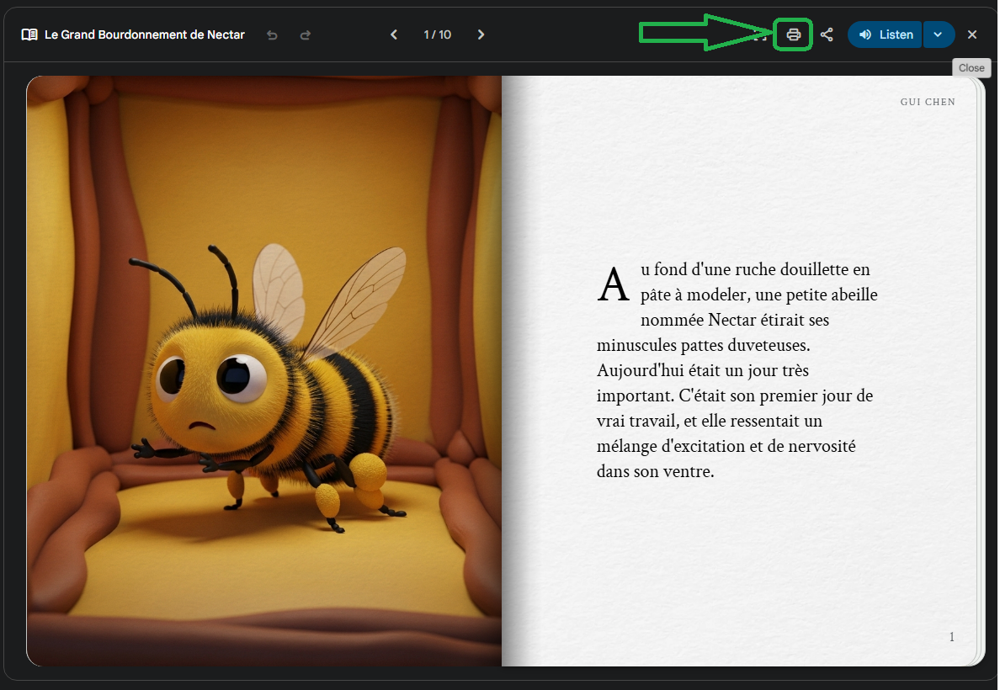
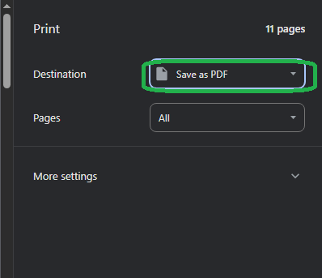

Ce guide explique comment récupérer les Gemini Storybooks pour les ajouter au site ou les partager en mode hors ligne. Les images illustrant chaque étape pourront être insérées dans les sections ci-dessous.
Depuis le site, cliquez sur la tuile Gemini Storybooks (ou le lien direct) pour afficher la bibliothèque. Vérifiez que vous êtes connecté si le contenu est réservé aux membres.
Utilisez le bouton Télécharger pour ouvrir les options. Sélectionnez le paquet HTML offline pour une intégration directe au site ou un fichier PDF si vous souhaitez une version imprimable.
Confirmez le format choisi. Un fichier compressé (.zip) est généré et téléchargé. Selon la taille de la collection, l’opération peut prendre quelques minutes.
Ouvrez le fichier .zip et vérifiez que chaque histoire contient les images, les fichiers audio (s’il y en a) et la page HTML. Corrigez les noms de fichiers si nécessaire pour éviter les espaces ou caractères spéciaux.
Une fois que vous avez le fichier PDF, vous pouvez vous rendre sur la page de votre choix, soit la page adaptée pour switch, soit la page adaptée pour contrôle oculaire. Vous pourrez ajouter votre PDF directement sur ces pages et choisir différentes options pour la lecture, dépendemment du type d'activité souhaitée et des capacités du lecteur.
Voici quelques informations supplémentaires concernant l'utilisation des PDF exportés :